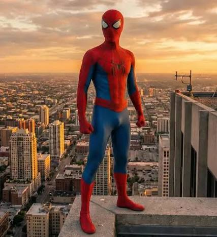
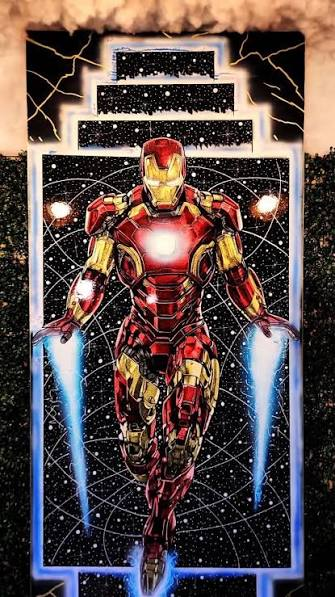
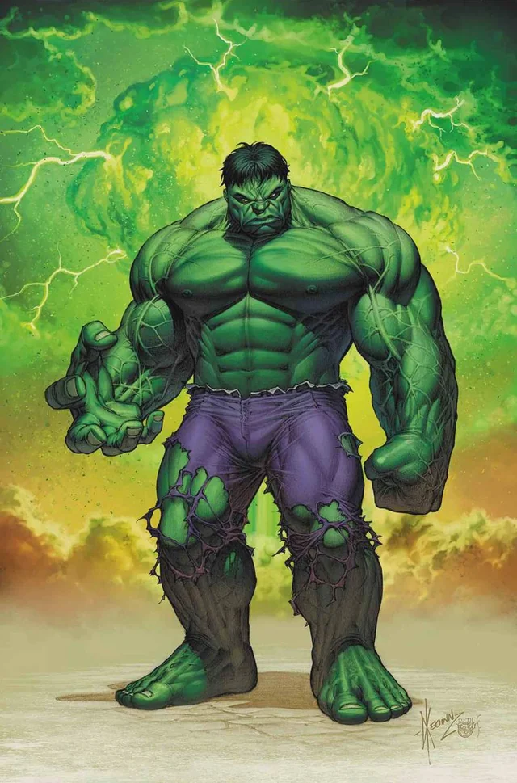
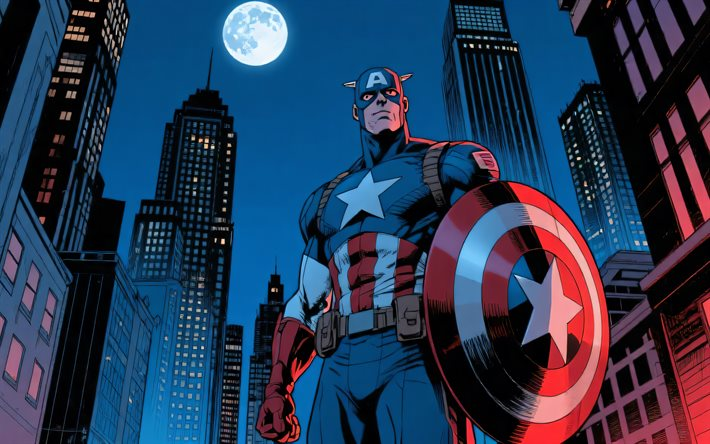
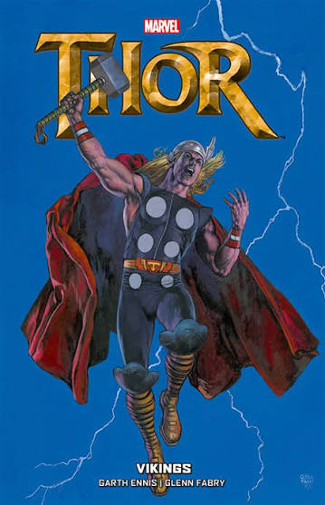
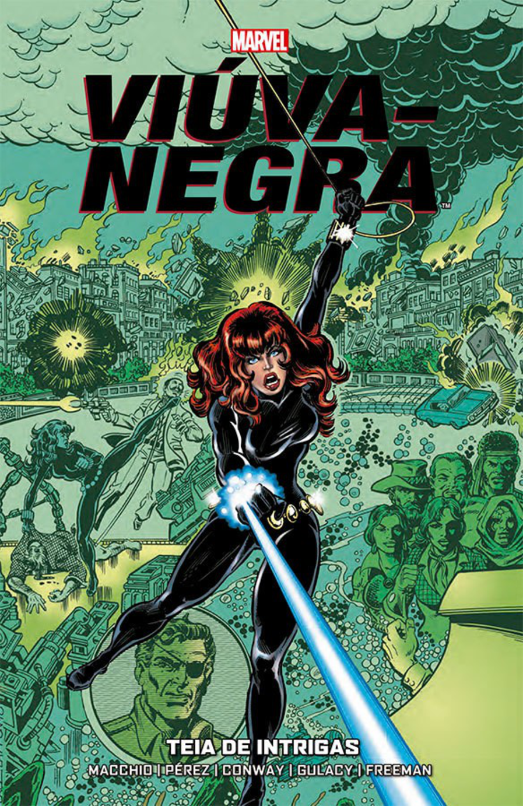

Conheça os melhores heróis da Marvel
A Marvel é uma das maiores marcas de entretenimento do mundo, destacando-se por seus heróis icônicos, histórias envolventes, efeitos visuais impressionantes e universos repletos de ação e aventura.
A Marvel é uma das maiores marcas de entretenimento do mundo, destacando-se por seus heróis icônicos, histórias envolventes, efeitos visuais impressionantes e universos repletos de ação e aventura.


1- Homem-Aranha
O Homem-Aranha é um dos heróis mais famosos da Marvel. Conhecido como Peter Parker, ele possui habilidades especiais, como força, agilidade e a capacidade de lançar teias. Além de enfrentar vilões perigosos, usa seus poderes para proteger as pessoas e combater o crime, seguindo seu famoso lema: “Com grandes poderes vêm grandes responsabilidades.”

2- Homem de Ferro
O Homem de Ferro é um dos heróis mais icônicos da Marvel. Conhecido como Tony Stark, ele é um gênio, inventor e empresário que cria uma poderosa armadura tecnológica. Com inteligência, equipamentos avançados e muita coragem, ele enfrenta diversos vilões e usa sua tecnologia para proteger o mundo.

3- Hulk
O Hulk é um dos personagens mais poderosos da Marvel. Conhecido como Bruce Banner, ele se transforma em uma criatura gigante e extremamente forte quando fica com raiva. Apesar de sua aparência assustadora, Hulk busca usar sua força para proteger as pessoas e enfrentar ameaças perigosas.

4- Capitão América
O Capitão América é um dos heróis mais importantes da Marvel. Conhecido como Steve Rogers, ele recebeu habilidades especiais após passar por um experimento que o tornou mais forte, ágil e resistente. Com seu escudo e espírito de liderança, luta para proteger as pessoas e defender a justiça.

5- Thor
O Thor é um dos heróis mais poderosos da Marvel. Conhecido como o Deus do Trovão, ele possui uma força extraordinária e controla os raios e tempestades. Com seu poderoso martelo Mjölnir e grande coragem, Thor enfrenta inimigos e protege tanto a Terra quanto seu reino, Asgard.

6- Viúva Negra
A Viúva Negra é uma das heroínas mais habilidosas da Marvel. Conhecida como Natasha Romanoff, ela é uma excelente espiã e lutadora, destacando-se por sua agilidade, inteligência e domínio de diversas técnicas de combate. Com coragem e determinação, ela enfrenta grandes ameaças ao lado dos Vingadores.